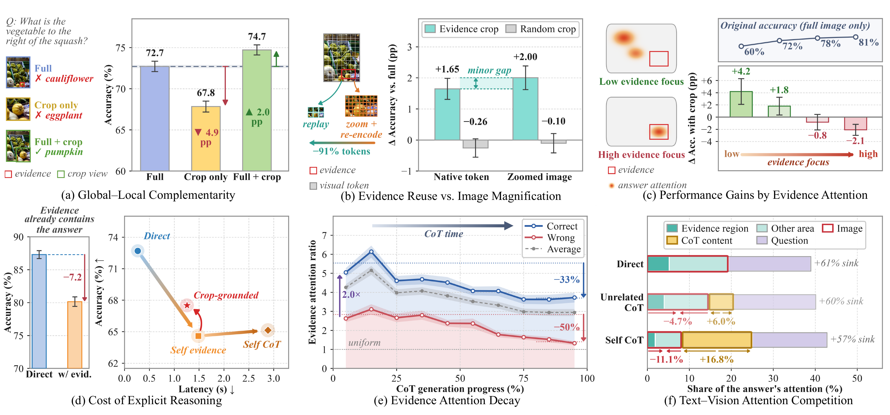
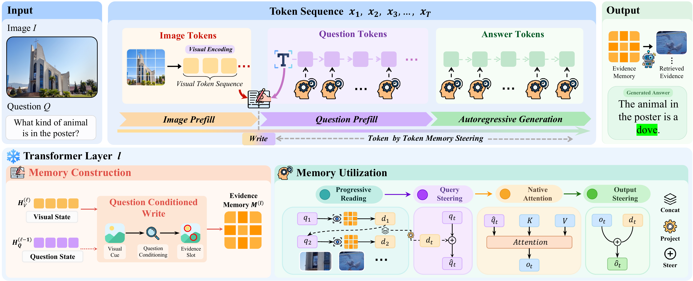
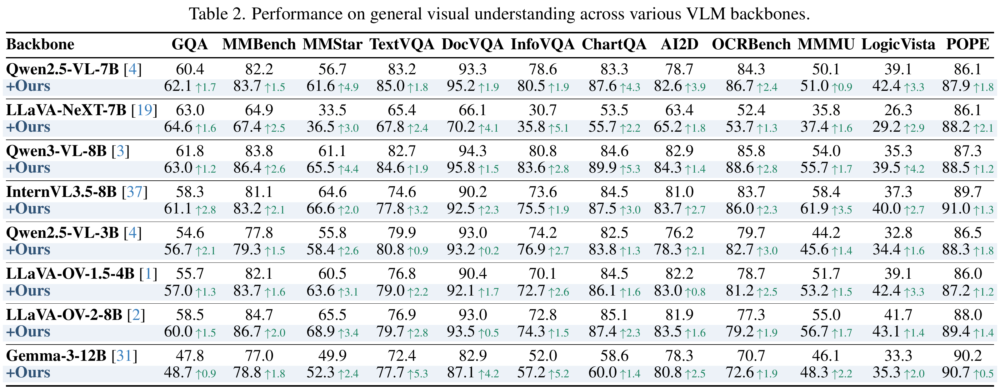
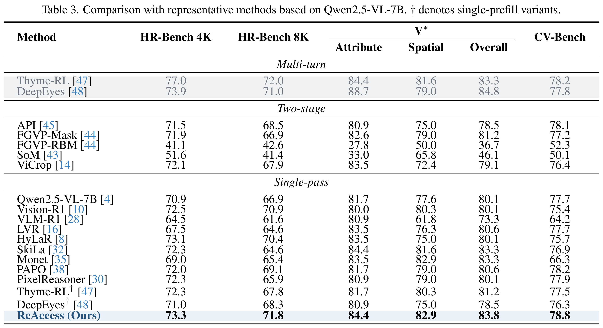
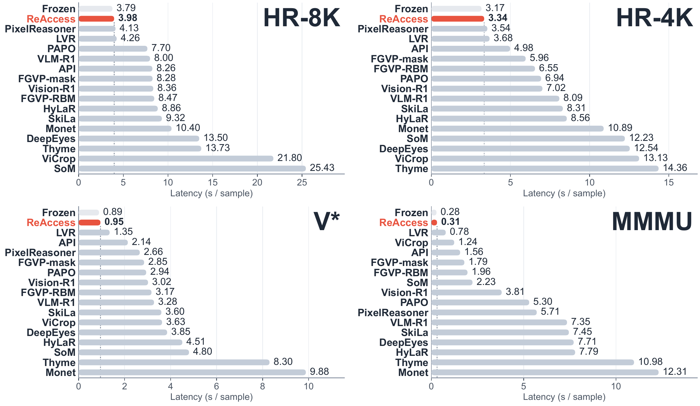
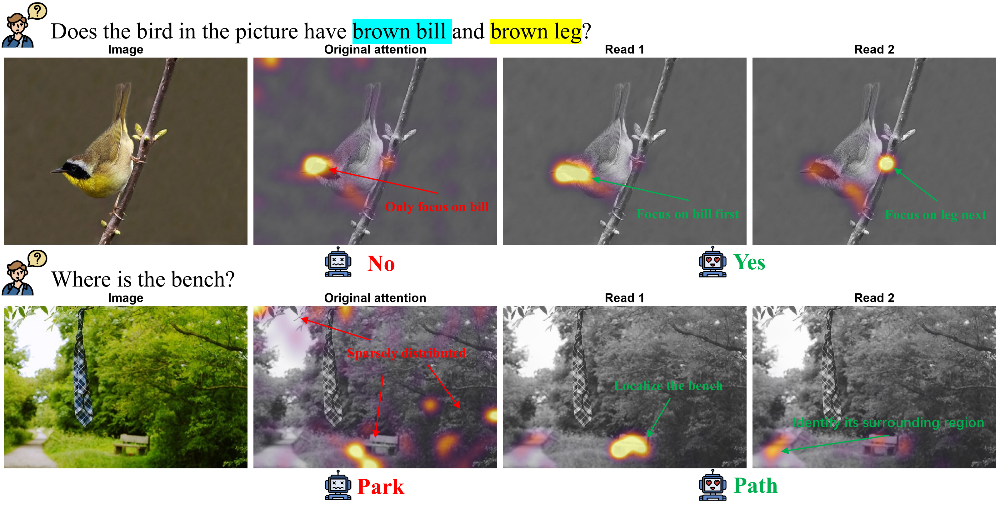

Small clues need a bigger picture.
Relevant regions occupy only 2.8% of visual tokens. Isolating them hurts accuracy; combining them with the full image helps.
The evidence is already there.
Keep it within reach.
01 The core idea
A VLM can encode the right visual details and still fail to use them. The missing link is sustained access to the evidence that matters.
Answering a visual question often depends on a few small clues, interpreted within the broader scene. Repeatedly inspecting the image adds cost, while long textual reasoning can draw attention away from the very evidence needed for the answer.
ReAccess connects evidence preservation with evidence utilization. It builds a compact, question-conditioned memory during a single visual prefill, then progressively retrieves complementary evidence to steer the frozen VLM’s attention and hidden representations.
Store question-relevant visual associations while keeping the original image context.
Use successive memory reads to recover complementary details as computation evolves.
Let retrieved evidence guide attention queries and refine the model’s representations.
The motivation
Our analysis reveals why richer visual information alone does not guarantee better answers.

Relevant regions occupy only 2.8% of visual tokens. Isolating them hurts accuracy; combining them with the full image helps.
As reasoning text grows, attention shifts away from the image. Evidence can remain encoded while losing influence on the answer.
Probing low-dimensional hidden states recovers substantial visual information, motivating a small, queryable evidence memory.
02 The method
ReAccess turns visual memory into a mechanism for evidence-grounded reasoning, while preserving the VLM’s original visual pathway.

Spatially aware features and question-conditioned weights organize visual key–value associations into a compact 64 × 64 memory at each layer.
Two successive reads retrieve complementary evidence. Their outputs steer both the native attention query and the hidden representation used for prediction.
Frozen backbone, lightweight learning. On Qwen2.5-VL-7B, ReAccess trains 58M memory-module parameters (about 0.7% of the full model) for one epoch. Inference uses a single visual prefill, without explicit intermediate reasoning traces.
03 The results
Consistent gains across model families, followed by a closer look at challenging visual perception and reasoning.
Eight backbones. Twelve benchmarks. Improvements across every model–benchmark pair.

Up to 16.6% relative improvement — from 30.7 to 35.8 on InfoVQA with LLaVA-NeXT-7B. Gains extend across perception, documents, charts, and reasoning.
A comparison with multi-turn, two-stage, and single-pass methods on Qwen2.5-VL-7B.

HR-Bench 8K
66.9% → 71.8%
V* spatial accuracy
77.6% → 82.9%
CV-Bench accuracy
77.7% → 78.8%
The efficiency
ReAccess retrieves evidence directly from hidden states, keeping the inference procedure consistent across tasks.
additional latency over the frozen model, on average
The paper reports approximately 10× average speedup over reasoning-intensive methods such as Thyme-RL and DeepEyes.

04 Inside the memory
Successive memory reads attend to complementary clues, connecting the details needed for a grounded answer.

The original model focuses on the bird’s bill and overlooks its leg. Two complementary reads recover both details, changing the answer from No to Yes.
ReAccess first localizes the bench, then retrieves evidence from the surrounding path, refining the answer from Park to Path.
Look once. Keep the evidence in reach.
@article{chen2026reaccess,
title={ReAccess: Look Once, Stay Focused with Efficient Test Time Memory},
author={Chen, Tianhao and Fan, Yilong and Wu, Yuheng and Hu, Xiaobin and Lee, Dongman},
journal={arXiv preprint arXiv:2611.20936},
year={2026}
}